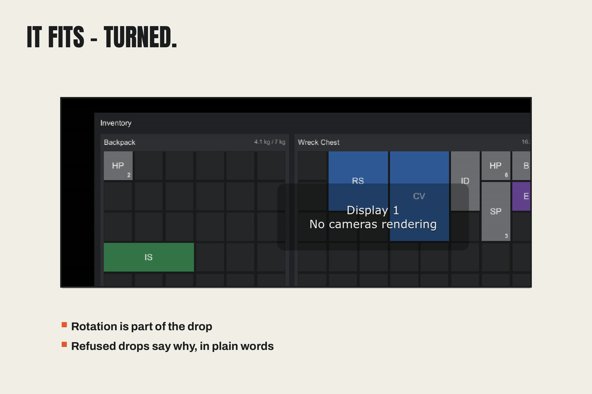

Demo Guide — The Loot Yard
The demo is the integration example, built entirely through the
public API. Import it (Import the Loot Yard Sample in the
workshop) and build it (Build the Demo Scene) — assets land in
Assets/LootGrid Pro Demo, the scene opens, and deleting that folder
removes everything.

What is in it
- Ten item definitions — Iron Sword 1×3, Iron Dagger 1×2, Round
Shield 2×2, Leather Cap 2×2, Chain Vest 2×3, Travel Boots 2×1,
Healing Potion 1×1 (stack 10), Bandage 1×1 (stack 10), Emerald 1×1
(stack 5), Scrap Plank 1×2 (stack 5) — as real assets under
Items/, collected in one database. - Backpack — 6×5, 60 kg limit, starts with 2 Healing Potions.
- Wreck Chest — 8×5, no weight limit, stocked with the sword, shield, chain vest, dagger, 6 potions, 4 bandages, 3 scrap planks and an emerald.
- Equipment loadout — starts with the Leather Cap already worn.
- Wreck Loot table — five weighted entries; one press of Loot the Wreck rolls it three times into the chest.
The two-minute tour
- Rotate to fit. Drag the Iron Sword toward the Backpack. It is 1×3; press R mid-drag and the ghost turns 3×1 — drop it in. That single gesture is the product's promise, proven by your own hand.
- Loot the Wreck. New stacks land in the chest and the status line names exactly what arrived.
- Take All to Backpack. Fit-checked transfer: what fits moves, the status line counts it.
- Sort / Stack on either panel; watch the weight readout track every move.
- Equip. Click the Iron Dagger, then the doll's MainHand slot. Click the Iron Sword, then MainHand again — the dagger returns to the chest as the sword equips.
The driver script (LootYard.cs, in the sample) is short and uses
only public API — read it as the recipe for your own demo buttons.